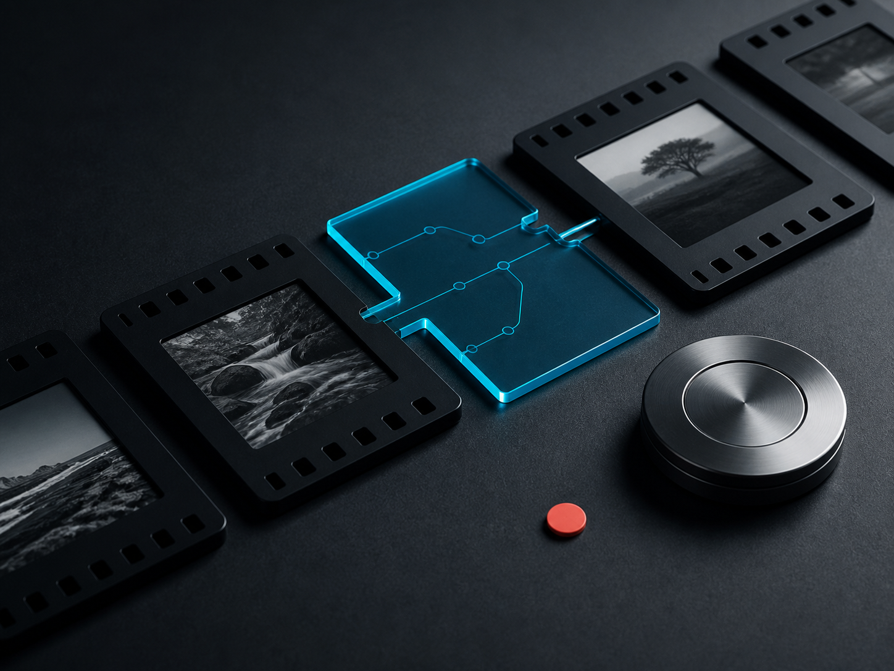

Timed shot plans
Every scene gets a purpose, frame window, camera choice, transition, source, and acceptance check.
Open-source media workflow plugin
Lukecho Media Studio turns a brief, reference image, clip, or music track into timed shots, continuity rules, guarded generation steps, and a release checklist for Codex and Claude.
View the open-source pluginDefine the visual world, place every scene on a real timeline, approve remote calls before they consume quota, then review the assembled result against measurable gates.

Every scene gets a purpose, frame window, camera choice, transition, source, and acceptance check.
Characters, wardrobe, props, geography, light direction, palette, and screen movement stay explicit.
Quota-consuming calls require a scoped approval and ambiguous failures are never retried automatically.
Duration, frames, codecs, decode health, identity, pacing, transitions, and story each receive evidence.
Version 0.1.1 is available under Apache-2.0. Hosted accounts, billing, and a remote generation service are still under private validation and are not being offered here.